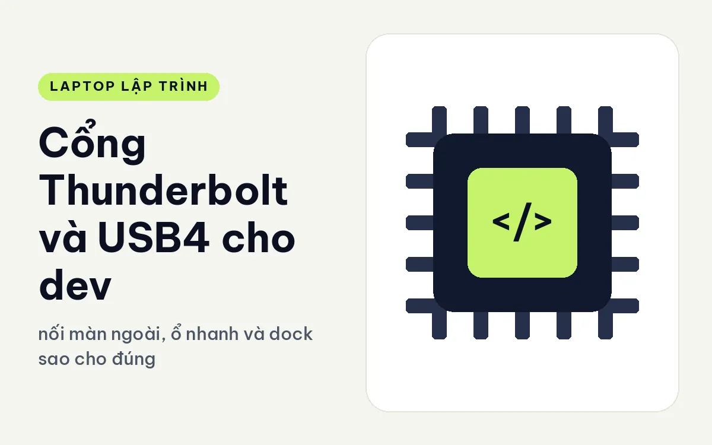
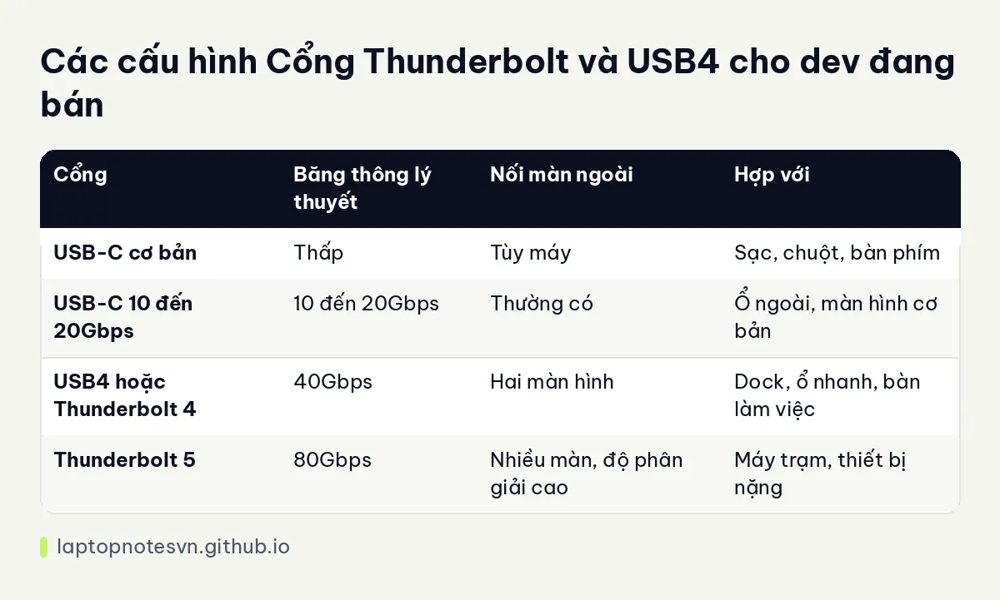

Cổng Thunderbolt và USB4 cho dev - nối màn ngoài, ổ nhanh và dock sao cho đúng

Trên nhiều laptop, các cổng hình bầu dục giống hệt nhau đều gọi là USB-C, nhưng bên trong chúng có thể hoàn toàn khác. Một cổng chỉ sạc và truyền dữ liệu chậm, một cổng khác chạy được hai màn hình ngoài, ổ SSD ngoài tốc độ cao và cả card đồ họa gắn ngoài. Với dev dùng dock ở bàn làm việc, hiểu khác biệt này giúp bạn tránh mua máy rồi mới phát hiện cắm màn ngoài không lên hình.
Bài này giải thích các chuẩn cổng thường gặp, những gì chúng làm được cho công việc code, cách đọc thông số và các máy đang bán thuộc nhóm nào. Số băng thông là con số lý thuyết của chuẩn, thực tế còn phụ thuộc cáp và thiết bị.
Các chuẩn cổng thường gặp
USB-C chỉ là hình dạng đầu cắm. Bên trong có thể là chuẩn USB cơ bản với tốc độ thấp, USB tốc độ 10 hoặc 20Gbps, USB4 40Gbps hoặc Thunderbolt. Nhiều máy tầm thấp có cổng USB-C chỉ phục vụ sạc và truyền tệp, đôi khi hỗ trợ xuất hình, đôi khi không.
USB4 và Thunderbolt 4 có băng thông tối đa 40Gbps. Thunderbolt 4 đặt ra yêu cầu bắt buộc chặt hơn: hỗ trợ xuất hai màn hình 4K, truyền dữ liệu đủ nhanh để nối ổ ngoài và dock, cấp nguồn. USB4 là chuẩn mở với yêu cầu linh hoạt hơn, nên cổng USB4 của các máy khác nhau có thể không giống nhau về tính năng.
Thunderbolt 5 nâng băng thông lên 80Gbps, và có thể tăng cường theo một hướng khi cần xuất hình độ phân giải cao. Chuẩn này chủ yếu thấy trên máy trạm cao cấp, nơi bạn nối nhiều màn hình, ổ nhanh hoặc thiết bị gắn ngoài nặng.
Dev cần dùng cổng cho việc gì
Thứ nhất là nối màn hình ngoài. Một dock Thunderbolt hay cổng USB-C có hỗ trợ xuất hình cho phép bạn cắm một sợi cáp duy nhất mỗi sáng: màn hình, bàn phím, chuột, mạng dây và sạc đều đi qua. Cách này gọn và tiện, nhưng cổng của máy phải hỗ trợ, đồng thời dock phải đúng chuẩn.
Thứ hai là ổ SSD ngoài. Khi sao chép máy ảo, bộ dữ liệu hay ảnh Docker lớn, cổng nhanh rút ngắn thời gian đáng kể so với cổng USB chậm. Nếu bạn ít khi chép tệp lớn, yêu cầu này thấp hơn.
Thứ ba là mạng dây. Nhiều máy mỏng bỏ cổng Ethernet, dùng dock hoặc đầu chuyển. Với dev cần kết nối ổn định cho phiên làm việc từ xa hay chép dữ liệu qua mạng nội bộ, máy có sẵn cổng mạng hoặc dock tốt là điểm cộng.
Thứ tư là card đồ họa gắn ngoài hoặc thiết bị đặc thù như bo mạch nhúng, bộ phân tích tín hiệu. Chủ đề dev nhúng được bàn kỹ hơn trong bài laptop cho lập trình nhúng và IoT.
Cách đọc thông số cổng
Đừng dừng ở dòng có USB-C. Hãy tìm ba thông tin: tốc độ tối đa, có hỗ trợ xuất hình (DisplayPort) hay không, và có sạc qua cổng đó được không. Nếu thông số không ghi rõ, hãy xem sơ đồ cổng hoặc hỏi lại nhà bán.
Cũng nên đếm số cổng. Một máy chỉ có hai cổng, trong đó một cổng dùng để sạc, nghĩa là chỉ còn một cổng cho mọi thứ khác. Với máy mỏng ít cổng, chuẩn bị dock hay hub là chuyện gần như bắt buộc.
Bảng đối chiếu nhanh

| Cổng | Băng thông lý thuyết | Nối màn ngoài | Hợp với |
|---|---|---|---|
| USB-C cơ bản | Thấp | Tùy máy | Sạc, chuột, bàn phím |
| USB-C 10 đến 20Gbps | 10 đến 20Gbps | Thường có | Ổ ngoài, màn hình cơ bản |
| USB4 hoặc Thunderbolt 4 | 40Gbps | Hai màn hình | Dock, ổ nhanh, bàn làm việc |
| Thunderbolt 5 | 80Gbps | Nhiều màn, độ phân giải cao | Máy trạm, thiết bị nặng |
Những lỗi hay gặp khi dùng dock
Lỗi phổ biến nhất là cáp không đúng chuẩn. Một sợi cáp USB-C rẻ có thể sạc được nhưng không truyền hình hay dữ liệu nhanh, khiến bạn nghĩ cổng hoặc dock bị hỏng. Hãy dùng cáp đi kèm dock hoặc cáp ghi rõ chuẩn 40Gbps.
Lỗi thứ hai là dock không cấp đủ điện. Dock cho phép cấp nguồn ngược về laptop, nhưng nếu công suất của dock thấp hơn mức máy cần, máy vẫn tụt pin khi chạy nặng dù đang cắm. Hãy chọn dock có công suất đủ cho máy.
Lỗi thứ ba là cắm quá nhiều thiết bị lên một cổng, khiến băng thông chia nhau và màn hình hay ổ chạy chậm. Khi dock kết nối nhiều thứ, hãy ưu tiên cổng Thunderbolt cho dock và dùng cổng còn lại cho thiết bị riêng.
Máy nào đang đáp ứng điều này
Lenovo ThinkPad X1 Carbon Gen 14 | Aura Edition (2026) có ba cổng Thunderbolt 4 trong thân máy dưới 1 kg. Đây là máy hợp người muốn gọn mà vẫn nối được dock, màn ngoài và ổ nhanh cùng lúc.
Lenovo ThinkPad P1 Gen 8 - Mobile WorkStation (2025) có hai cổng Thunderbolt 5, một cổng Thunderbolt 4 và cổng USB-A. Đây là mức cao cho người cần nối nhiều thiết bị băng thông lớn, cân nặng 1,84 kg.
DELL XPS 13 DX13260 (2026) thì phải chọn đúng bản: bản Core 5 320 dùng USB-C thường, còn bản Core Ultra 7 355 có hai cổng Thunderbolt 4. Nếu bạn dùng dock hay hai màn hình ngoài, hãy chọn bản Thunderbolt.
Về chuyện sạc và pin khi cắm dock suốt ngày, bài pin và sạc laptop dev đi làm nói thêm.
Còn nếu cần bản đánh giá riêng, ThinkPad P1 Gen 8 cho lập trình trình bày chi tiết hơn.
Đăng ngày 09/11/2026